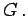

Inhalt Index DeskTop Bronstein

 Funktionen und ihre Darstellung Funktionsbegriff Stetigkeit einer Funktion
Funktionen und ihre Darstellung Funktionsbegriff Stetigkeit einer Funktion


Die meisten Funktionen, die in den Anwendungen vorkommen, sind stetig, d.h., bei kleinen Änderungen des Arguments x einer stetigen Funktion y(x) ändert sich diese auch nur geringfügig. Die graphische Darstellung einer solchen Funktion ergibt eine zusammenhängende Kurve. Ist dagegen die Kurve an verschiedenen Stellen unterbrochen, dann heißt die zugehörige Funktion unstetig, und die Werte des Arguments, an denen die Unterbrechung auftritt, heißen Unstetigkeitsstellen. In der folgenden Abbildung ist das Kurvenbild einer Funktion dargestellt, die stückweise stetig ist.
Die Unstetigkeitsstellen befinden sich bei A, B, C, D, E, F und  Die Pfeile stehen für die Aussage, daß ihre Endpunkte nicht mehr zur Kurve gehören.